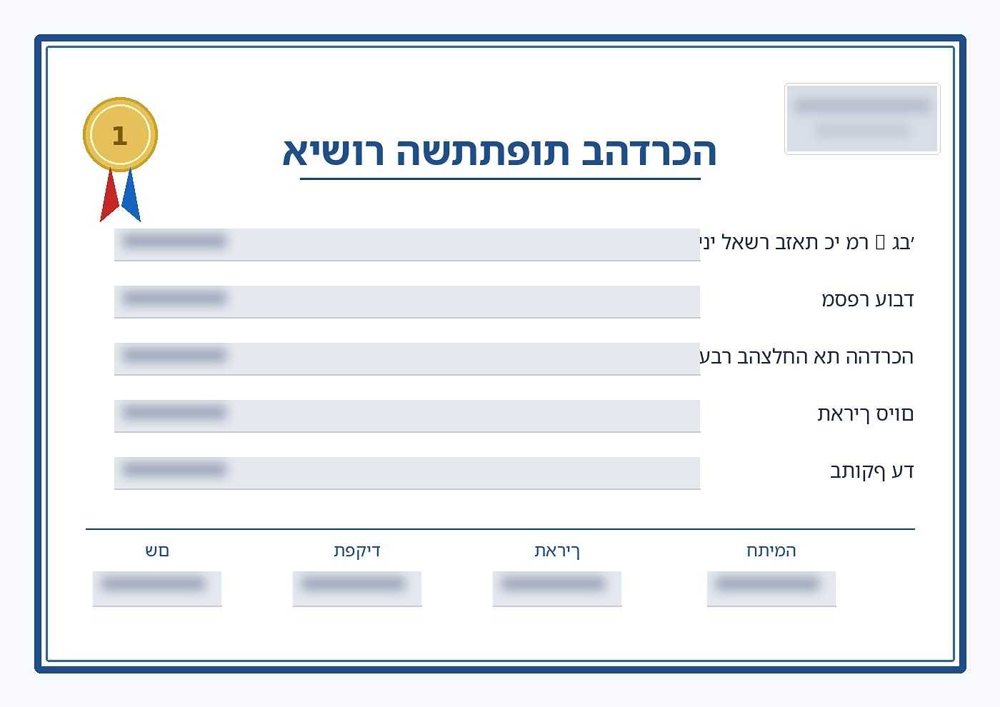

Training certificates
with Zapier
Clients wanted a professional certificate after an employee finished training. Bites does not support that in the product. I connected our app with an API key, caught the completion on a Zapier webhook, filled a PDF with the name, the training, and the other fields they asked for, and emailed it to the client.
After an employee finishes a course, some clients want a professional certificate — branded, with the person's name, the training, and the dates. It is the file they print, file, or send to their own compliance team.
We do not support certificates in the platform. Waiting on a product build would have left the client without the document they needed. The other way around was an automation.
I set up a Zapier flow so a completed training becomes a certificate in the client's inbox — without adding a new feature to Bites:
- API key on our app — so Zapier can talk to Bites when a training is done.
- Webhook catch — the completion event lands in Zapier instead of dying in the product.
- PDF with placeholders — employee name, training name, and the other details the client asked for get mapped into the certificate template.
- Email to the client — the finished PDF goes out automatically. They get a real certificate, not a screenshot from the LMS.
Same pattern as the rest of my work: a customer ask the product does not cover yet, then a practical path that ships.

Clients get the document they asked for the moment training is done. We did not have to wait for certificates to land in the product:
This is how I work: if the product cannot do it yet and the client still needs it, I wire the path — API, webhook, document, email — and ship.